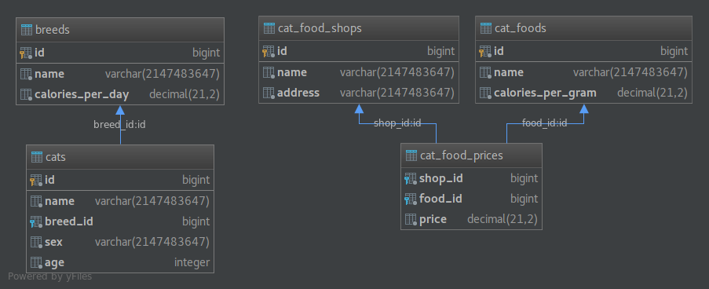
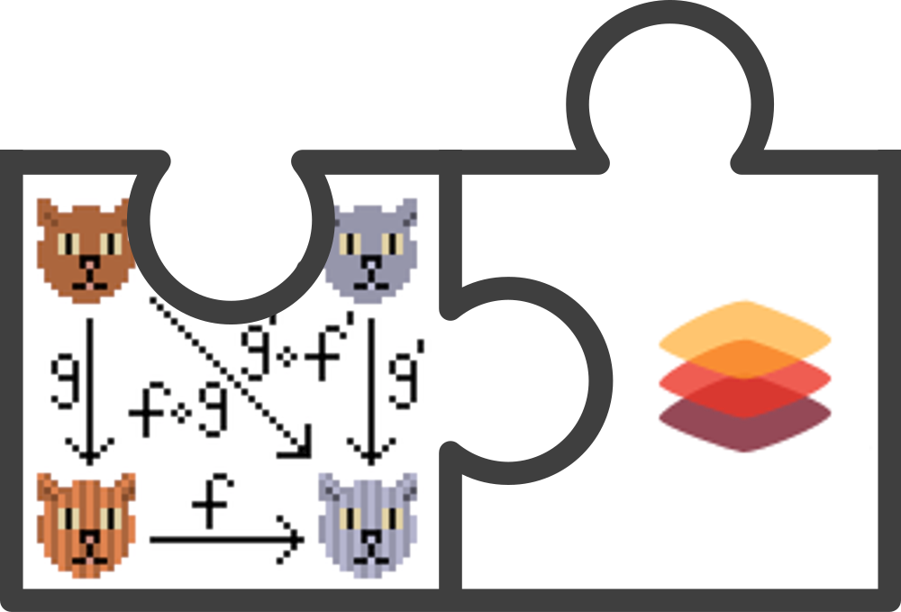

### Plan for today
1. Setup
2. Presentation
3. Solving exercises
4. Summary
### Link for presentation
### https://bartosz822.github.io/slick-cats-workshop-presentation
### Clone repository:
### https://github.com/bartosz822/slick-cats-workshop
## Setup
Recommended IDE
### Setup for IntelliJ
*Recommended IntelliJ version 2018.1 or higher*
* clone repository
* open project as an sbt project and wait for sbt to download all dependencies
* make sure everything compiles
* click with left click on exercises package and select 'Run all ScalaTests...' (they should all fail)
* follow comments and implements all workshop methods
*If you have any problems don't hestitate to ask for our help :)*
Whorkshop db schema

### Example data inserts
### data.TestData
## Why slick?
* Efficiency with Pre-Optimization
* Type Safety
* Productive, Composable Model for Building Queries
* Better separation of businness logic from db
* Free and open source
# Slick
##### Scala Language-Integrated Connection Kit
>Slick is a modern database query and access library for Scala. It allows you to work with stored data almost as if you were using Scala collections while at the same time giving you full control over when a database access happens and which data is transferred. You can write your database queries in Scala instead of SQL, thus profiting from the static checking, compile-time safety and compositionality of Scala. Slick features an extensible query compiler which can generate code for different backends.
Slick Basics
> Importing apropriate profile for db. A profile’s api object contains all commonly needed imports and other parts of Slick such as database handling.
```scala
import slick.jdbc.H2Profile.api._
```
> Slick’s API is fully asynchronous and runs database calls in a separate thread pool. For running user code in composition of DBIOAction and Future values, apropriate ExecutionContext needs to be imported.
```scala
import scala.concurrent.ExecutionContext.Implicits.global
```
### Case Class definition
```scala
case class Cat(
id: Option[Long],
name: String,
breedId: Long,
sex: String,
age: Int
)
```
### Table definition
```scala
class Cats(tag: Tag) extends IdTable[Cat](tag, "cats") {
def id = column[Long]("id", O.PrimaryKey, O.AutoInc)
def name = column[String]("name")
def breedId = column[Long]("breed_id")
def sex = column[String]("sex")
def age = column[Int]("age")
def breedFk = foreignKey("breed_fk", breedId, Breeds.query)(_.id)
def * = (id.?, name, breedId, sex, age) <> (Cat.tupled, Cat.unapply)
}
object Cats {
lazy val query = TableQuery[Cats]
}
```
### Action creating table in db
```scala
Cats.query.schema.create
```
### Adding to table
```scala
Cats.query += Cat(id = None, name = "Bella", breedId = 2, sex = "F", age = 3)
```
### Accesing table
```scala
Cats.query.forEach(println)
Cats.query.filer(_.age < 5)
Cats.query.map(_.name).forEach(println)
```
### Joins
Monadic
```scala
for {
cat <- Cats.query
breed <- Breeds.query if breed.id === cat.breedId
} yield {
(cat, breed)
}
```
Applicative
```scala
Cats.query
.join(Breeds.Query)
.on(_.breedId === _.id)
```
### Running an action
```scala
catsDb = {
url = "jdbc:h2:mem:cats"
driver = org.h2.Driver
connectionPool = disabled
keepAliveConnection = true
}
```
```scala
val db = Database.forConfig("catsDb")
val action = Cats.query.forEach(println)
val futureResult = db.run(action)
```
## Main concept
### Scala queries >> actions >> running actions on db and getting results
## Queries
### No standard Scala Types but its representations (Rep)
```scala
Rep[T]
Query -> Rep[Seq[T]]
TableQuery
```
### Similiar operations as Scala Collections like flatMap, filter, take, groupBy etc.
## Actions
* Action is something that you can execute on db
* Actions are created when calling .result on a Query, or .create, or += and similiar and have type DBIO
* Actions can be composed with andThen, flatMap, DBIO.seq or
transactionally
* Parts of action do not run concurrently
## Action compositon
```scala
for {
bella <- catsRepository.findByName("Bella")
breed <- breedsRepository.findExistingById(bella.breedId)
} yield {
breed.id
}
```
### Queries and actions are just descriptions of operation
### Operation on database is performed when action is executed on database service.
```scala
db.run(action)
```
## To sum up Slick gives us
* Table
* Query
* DBIO (action)
* Future (with result)
Slick + cats

# Cats
# Typeclass
### The problem
```scala
case class Cat(name: String, breedName: String)
def present = ??? //this one needs to be generic
val skipper = Cat("Skipper", "Maine Coon")
present(skipper)
// = "This is Skipper, Maine Coon"
```
### OOP
```scala
trait Showable {
def show: String
}
case class Cat(name: String, breedName: String) extends Showable {
def show: String = name + ", " + breedName
}
def present(showable: Showable) = "This is " + showable.show
val skipper = Cat("Skipper", "Maine Coon")
present(skipper)
// = "This is Skipper, Maine Coon"
```
### Typeclass
```scala
case class Cat(name: String, breedName: String)
trait Show[A] {
def show(a: A): String
}
val showCat = new Show[Cat] {
def show(cat: Cat): String = cat.name + ", " + cat.breedName
}
def present[A](a: A, s: Show[A]) = "This is " + s.show(a)
val skipper = Cat("Skipper", "Maine Coon")
present(skipper, showCat)
// = "This is Skipper, Maine Coon"
```
### Typeclass resolution in Scala
```scala
def present[A](a: A, s: Show[A]) = "This is " + s.show(a)
present(skipper, showCat)
//we have to pass showCat instance every time
```
### Implicits to the rescue
```scala
implicit val showCat = new Show[Cat] {
def show(cat: Cat): String = cat.name + ", " + cat.breedName
}
def present[A](a: A)(implicit s: Show[A]) = "This is " + s.show(a)
//compiler will automatically search for Show[A] by its type
present(skipper)
//we said that we know how to show cat a few lines above, we don't have to repeat it
```
### Cat, instances and logic - separated
```scala
package instances
object CatInstances {
implicit val showCat = new Show[Cat] {
def show(cat: Cat): String = cat.name + ", " + cat.breedName
}
}
```
```scala
package services
object Presenter {
def present[A](a: A)(implicit s: Show[A]) = "This is " + s.show(a)
}
```
```scala
import model.Cat
import instances.CatInstances.showCat
import services.Presenter.present
present(skipper)
```
### Postfix operators
```scala
implicit class ShowOps[A](a: A) {
def show(implicit s: Show[A]) = s.show(a)
}
```
```scala
val skipper = Cat("Skipper", "Maine Coon")
skipper.show
```
### Monad
```scala
def pure[A](a: A): M[A]
//Option
def pure[A](a: A) = Some(a)
//List
def pure[A](a: A) = List(a)
//DBIO
def pure[A](a: A) = DBIO.successful(a)
```
```scala
def flatMap[A, B](fa: M[A])(f: (A) => M[B]): M[B] //bind in Haskell world
//in standard cases implemented as
fa.flatMap(f)
```
If something is a monad, it's also Applicative and Functor
### Option T
###### Convenience data type for M[Option[A]]
```scala
def tryFindCat(id: Long): OptionT[DBIO, Cat]
def tryFindBreedForCat(cat: Cat): OptionT[DBIO, Breed]
def getFavoriteFood(cat: Cat): Food
val cat: OptionT[DBIO, Cat] = tryFindCat(id)
val breed: OptionT[DBIO, Breed] = cat.flatMap(tryFindBreedForCat)
val favoriteFood: OptionT[DBIO, Food] = cat.map(getFavoriteFood)
```
### Either T
###### Convenience data type for M[Either[A, B]]
```scala
def tryFindCat(id: Long): EitherT[DBIO, Error, Cat]
def tryFindBreedForCat(cat: Cat): EitherT[DBIO, Error, Breed]
def getFavoriteFood(cat: Cat): Food
val cat: EitherT[DBIO, Error, Cat] = tryFindCat(id)
val breed: EitherT[DBIO, Error, Breed] = cat.flatMap(tryFindBreedForCat)
val favoriteFood: EitherT[DBIO, Error, Food] = cat.map(getFavoriteFood)
```
### Wrapping
```scala
def tryFindCatBefore(id: Long): DBIO[Option[Cat]]
def tryFindCatAfter(id: Long): OptionT[DBIO, Cat] = OptionT(tryFindCatBefore(id))
```
### Semigroup
###### Adding things up
```scala
def combine(x: A, y: A): A
```
```scala
List(1, 2, 3).combine(List(4, 5)) //List(1, 2, 3, 4, 5)
1.combine(2) // 3
```
### Semigroup
###### Adding wrappers if contained elements can be added
```scala
def combine(fx: DBIO[A], fy: DBIO[A])(implicit s: Semigroup[A]): DBIO[A] = {
fx.zip(fy).map { case (x, y) => x.combine(y) }
}
```
```scala
def fetchPersian: DBIO[List[Cat]]
def fetchMaineCoon: DBIO[List[Cat]]
fetchPersian.combine(fetchMaineCoon) //DBIO[List[Cat]]
```
### Validated vs. Either
```scala
valid[List[String], Int](1) combine
valid[List[String], Int](2) combine
valid[List[String], Int](3)
//Valid(6)
```
```scala
Right[List[String], Int](1) combine
Right[List[String], Int](2) combine
Right[List[String], Int](3)
//Right(6)
```
### Validated vs. Either
```scala
invalid[List[String], Int](List("err1")) combine
invalid[List[String], Int](List("err2")) combine
valid[List[String], Int](3)
//Invalid(List("err1", "err2"))
```
```scala
Left[List[String], Int](List("err1")) combine
Left[List[String], Int](List("err2")) combine
Right[List[String], Int](3)
//Left(List("err1"))
```
# Drawbacks
# Let's Code!

# Extras
### Unicorn
```scala
/** Id class for type-safe joins and queries. */
case class UserId(id: Long) extends AnyVal with BaseId[Long]
case class UserRow(
id: Option[UserId],
email: String,
name: String
) extends WithId[Long, UserId]
/** Table definition for users. */
class Users(tag: Tag) extends IdTable[UserId, UserRow](tag, "USERS") {
def email = column[String]("EMAIL")
def name = column[String]("LAST_NAME")
override def * = (id.?, email, name) <> (UserRow.tupled, UserRow.unapply)
}
```
https://github.com/VirtusLab/unicorn